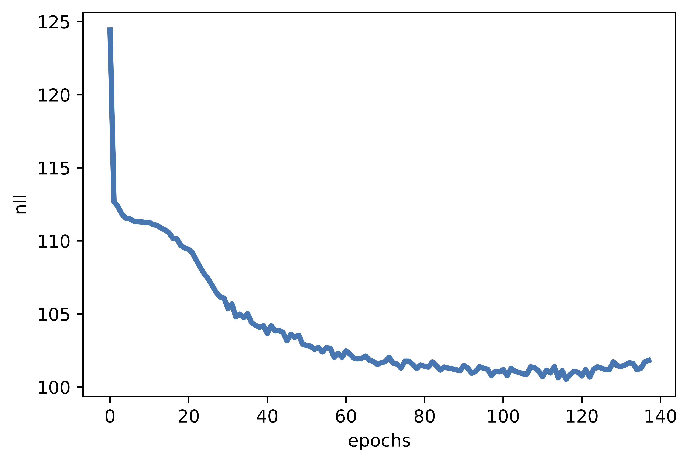

Introduction¶
In the previous blog posts, we discussed two approaches to learning $p(\mathbf{x})$: autoregressive models (ARMs) and flow-based models (or flows for short). Both ARMs and flows model the likelihood function directly, that is, either by factorizing the distribution and parameterizing conditional distributions $p(x_{d}|\mathbf{x}_{<d})$ as in ARMs, or by utilizing invertible transformations (neural networks) for the change of variables formula as in flows. Now, we will discuss a third approach that introduces latent variables.
Let us briefly discuss the following scenario. We have a collection of images with horses. We want to learn $p(\mathbf{x})$ for, e.g., generating new images. Before we do that, we can ask ourselves how we should generate a horse, or, in other words, if we were such a generative model, how we would do that. Maybe we would first sketch the general silhouette of a horse, its size and shape, then add hooves, fill in details of a head, color it, etc. In the end, we may consider the background. In general, we can say that there are some factors in data (e.g., a silhouette, a color, a background) that are crucial for generating an object (here, a horse). Once we decide about these factors, we can generate them by adding details. I don't want to delve into a philosophical/cognitive discourse, but I hope that we all agree that when we paint something, this is more-or-less our procedure of generating a painting.
We use now mathematics to express that generative process. Namely, we have our high-dimensional objects of interest, $\mathbf{x} \in \mathcal{X}^{D}$ (e.g., for images, $\mathcal{X} \in \{0, 1, \ldots, 255\}$), and a low-dimensional latent variables, $\mathbf{z} \in \mathcal{Z}^{M}$ (e.g., $\mathcal{Z} = \mathbb{R}$), that we can call hidden factors in data. In mathematical words, we can refer to $\mathcal{Z}^{M}$ as a low-dimensional manifold. Then, the generative process could be expressed as follows:
- $\mathbf{z} \sim p(\mathbf{z})$ (Figure 1, in red);
- $\mathbf{x} \sim p(\mathbf{x} | \mathbf{z})$ (Figure 1, in blue).
In plain words, we first sample $\mathbf{z}$ (e.g., we imagine the size, the shape, and the color of my horse), and then create an image with all necessary details, i.e., we sample $\mathbf{x}$ from the conditional distribution $p(\mathbf{x} | \mathbf{z})$. One can ask whether we need probabilities here, but try to create precisely the same image at least two times. Due to many various external factors, it's almost impossible. That's why probability theory is so beautiful and allows us to describe reality!

Figure 1. A diagram presenting a latent variable model and a generative process. Notice the low-dimensional manifold (here 2D) embedded in the high-dimensional space (here 3D).
The idea behind latent variable models is that we introduce the latent variables $\mathbf{z}$ and the joint distribution is factorized as follows: $p(\mathbf{x}, \mathbf{z}) = p(\mathbf{x} | \mathbf{z}) p(\mathbf{z})$. This naturally expressed the generative process described above. However, for training, we have access only to $\mathbf{x}$. Therefore, according to probabilistic inference, we should sum out (or marginalize out) the unknown, namely, $\mathbf{z}$. As a result, the (marginal) likelihood function is the following:
$$ p(\mathbf{x}) = \int p(\mathbf{x} | \mathbf{z}) p(\mathbf{z})\ \mathrm{d} \mathbf{z} . $$A natural question now is how to calculate this integral. In general, it is a difficult task. There are two possible directions. First, the integral is tractable. We will briefly discuss it before we jump into the second approach that utilizes a specific approximate inference, namely, variational inference.
Probabilistic PCA (pPCA): A Linear Gaussian Latent Variable Model¶
Let us discuss the following situation:
- We consider continuous random variables only, i.e., $\mathbf{z} \in \mathbb{R}^{M}$ and $\mathbf{x} \in \mathbb{R}^{D}$.
- The distrubution of $\mathbf{z}$ is the standard Gaussian, i.e., $p(\mathbf{z}) = \mathcal{N}\left(\mathbf{z}|0, \mathbf{I}\right)$.
- The dependency between $\mathbf{z}$ and $\mathbf{x}$ is linear and we assume a Gaussian additive noise:
where $\varepsilon \sim \mathcal{N}(\varepsilon|0, \sigma^{2}\mathbf{I})$. The propery of the Gaussian distribution yields:
$$ p(\mathbf{x} | \mathbf{z}) = \mathcal{N}\left(\mathbf{x}|\mathbf{W} \mathbf{z} + \mathbf{b}, \sigma^{2} \mathbf{I}\right) . $$This model is known as the probabilistic PCA (pPCA) (Tipping & Bishop, 1999).
Then, we can take advantage of properties of a linear combination of two vectors of normally-distributed random variables to calculate the integral explicitely (Bishop, 2006): \begin{align} p(\mathbf{x}) &= \int p(\mathbf{x} | \mathbf{z})\ p(\mathbf{z})\ \mathrm{d} \mathbf{z} \\ &= \int \mathcal{N}\left(\mathbf{x}|\mathbf{W} \mathbf{z} + \mathbf{b}, \sigma \mathbf{I}\right) \mathcal{N}\left(\mathbf{z}|0, \mathbf{I}\right)\ \mathrm{d} \mathbf{z} \\ &= \mathcal{N}\left(\mathbf{x}|\mathbf{b}, \mathbf{W} \mathbf{W}^{\top} + \sigma^2 \mathbf{I}\right) . \end{align}
Now, we can calculate the logarithm of the (marginal) likelihood function $\ln p(\mathbf{x})$! We refer to (Tipping & Bishop, 1999; Bishop, 2006) for more details on learning the paramters in the pPCA model. Moreover, what is interesting about the pPCA is that, due to properties of Gaussians, we can also calculate the true posterior over $\mathbf{z}$:
$$ p(\mathbf{z}|\mathbf{x}) = \mathcal{N}\left(\mathbf{M}^{-1} \mathbf{W}^{\top} (\mathbf{x} - \mu), \sigma^{-2}\mathbf{M} \right) $$where: $\mathbf{M} = \mathbf{W}^{\top} \mathbf{W} + \sigma^2 \mathbf{I}$. Once we find $\mathbf{W}$ that maxime the log-likelihood finction, and the dimensionality of the matrix $\mathbf{W}$ is computationally tractable, we can calculate $p(\mathbf{z}|\mathbf{x})$. This is a big thing! Why? Because for a given observation $\mathbf{x}$, we can calculate the distribution over the latent factors!
In my opinion, the probabilistic PCA is an extremely important latent variable model for two reasons. First, we can calculate everything by hand, thus, it is a great exercise to develop an intuition about the latent variable models. Second, it is a linear model, therefore, a curious reader should feel tingling in her head already and ask herself the following questions: What would happen if we take non-linear dependencies? And what would happen if we use other distributions than Gaussians? In both cases, the answer is the same: We wouldn't be able to calculate the integral exactly, and some sort of approximation would be necessary. Anyhow, pPCA is a model that everyone interested in latent variable models should study in depth to create an intuition about probabilistic modeling.
Variational Auto-Encoders: Variational Inference for Non-linear Latent Variable Models¶
The model and the objective Let us take a look at the integral one more time and think of a general case where we cannot calculate the integral exactly. The simplest approach would be to use the Monte Carlo approximation:
\begin{align} p(\mathbf{x}) &= \int p(\mathbf{x} | \mathbf{z})\ p(\mathbf{z})\ \mathrm{d} \mathbf{z} \\ &= \mathbb{E}_{\mathbf{z}\sim p(\mathbf{z})} \left[ p(\mathbf{x} | \mathbf{z}) \right] \\ &\approx \frac{1}{K} \sum_{k} p(\mathbf{x} | \mathbf{z}_{k}) \end{align}where, in the last line, we use samples from the prior over latents, $\mathbf{z}_{k} \sim p(\mathbf{z})$. Such an approach is relatively easy and since our computational power grows so fast, we can sample a lot of points in reasonably short time. However, as we know from statistics, if $\mathbf{z}$ is multidimensional, and $M$ is relatively large, we get into a trap of the curse of dimensionality, and to cover the space properly, the number of samples grows exponentially with respect to $M$. If we take too few samples, then the approximation is simply very poor.
We can use more advanced Monte Carlo techniques (Andrieu, 2003), however, they still suffer from issues associated with the curse of dimensionality. An alternative approach is the application of variational inference (Jordan et al., 1999). Let us consider a family of variational distributions parameterized by $\phi$, $\{q_{\phi}(\mathbf{z})\}_{\phi}$. For instance, we can consider Gaussians with means ans variances, $\phi = \{\mu, \sigma^{2}\}$. We know the form of these distributions, and we assume that they assign non-zero probability mass to all $\mathbf{z} \in \mathcal{Z}^{M}$. Then, the logarithm of the marginal distribution could be approximated as follows:
\begin{align} \ln p(\mathbf{x}) &= \ln \int p(\mathbf{x} | \mathbf{z}) p(\mathbf{z})\ \mathrm{d} \mathbf{z} \\ &= \ln \int \frac{q_{\phi}(\mathbf{z})}{q_{\phi}(\mathbf{z})} p(\mathbf{x} | \mathbf{z}) p(\mathbf{z})\ \mathrm{d} \mathbf{z} \\ &= \ln \mathbb{E}_{\mathbf{z}\sim q_{\phi}(\mathbf{z})} \left[ \frac{p(\mathbf{x} | \mathbf{z}) p(\mathbf{z})}{q_{\phi}(\mathbf{z}) } \right] \\ &\geq \mathbb{E}_{\mathbf{z}\sim q_{\phi}(\mathbf{z})} \ln \left[ \frac{p(\mathbf{x} | \mathbf{z}) p(\mathbf{z})}{q_{\phi}(\mathbf{z}) } \right] \\ &= \mathbb{E}_{\mathbf{z}\sim q_{\phi}(\mathbf{z})} \left[ \ln p(\mathbf{x} | \mathbf{z}) + \ln p(\mathbf{z}) - \ln q_{\phi}(\mathbf{z}) \right] \\ &= \mathbb{E}_{\mathbf{z}\sim q_{\phi}(\mathbf{z})} \left[ \ln p(\mathbf{x} | \mathbf{z}) \right] - \mathbb{E}_{\mathbf{z}\sim q_{\phi}(\mathbf{z})} \left[ \ln q_{\phi}(\mathbf{z}) - \ln p(\mathbf{z}) \right] . \end{align}In the fourth line we used Jensen's inequality.
If we consider an amortized variational posterior, namely, $q_{\phi}(\mathbf{z} | \mathbf{x})$ instead of $q_{\phi}(\mathbf{z})$ for each $\mathbf{x}$, then we get:
$$ \ln p(\mathbf{x}) \geq \mathbb{E}_{\mathbf{z}\sim q_{\phi}(\mathbf{z} | \mathbf{x})} \left[ \ln p(\mathbf{x} | \mathbf{z}) \right] - \mathbb{E}_{\mathbf{z}\sim q_{\phi}(\mathbf{z}|\mathbf{x})} \left[ \ln q_{\phi}(\mathbf{z} | \mathbf{x}) - \ln p(\mathbf{z}) \right] . $$Amortization could be extremely useful, because we train a single model (e.g., a neural network with some weights), and it returns parameters of a distribution for given input. From now on, we will assume that we use amortized variational posteriors, however, please remember that we don't need to do that! Please take a look at (Kim et al., 2018) where a semi-amortized variational inference is considered.
As a result, we obtain an auto-encoder-like model, with a stochastic encoder, $q_{\phi}(\mathbf{z} | \mathbf{x})$, and a stochastic decoder, $p(\mathbf{x} | \mathbf{z})$. We use stochastic to highlight that the encoder and the decoder are probability distributions, and to stress out a difference with a deterministic auto-encoder. Ths model, with the amortized variational posterior, is called a Variational Auto-Encoder (Kingma & Welling, 2013; Rezende et al., 2014). The lower-bound of the log-likelihood function is called the Evidence LOwer Bound (ELBO).
The first part of the ELBO, $\mathbb{E}_{\mathbf{z}\sim q_{\phi}(\mathbf{z} | \mathbf{x})} \left[ \ln p(\mathbf{x} | \mathbf{z}) \right]$, is referred to as the (negative) reconstruction error, because $\mathbf{x}$ is encoded to $\mathbf{z}$ and then decoded back. The second part of the ELBO, $\mathbb{E}_{\mathbf{z}\sim q_{\phi}(\mathbf{z}|\mathbf{x})} \left[ \ln q_{\phi}(\mathbf{z} | \mathbf{x}) - \ln p(\mathbf{z}) \right]$, could be seen as a regularizer and it coincides with the Kullback-Leibler divergence (KL). Please keep in mind that for a more complex models (e.g., hierarchical models), the regularizer(s) may not be interpreted as the KL term. Therefore, we prefer to use the term the regularizer because it is more general.
A different perspective on the ELBO For completness, we provide also a different deriviation of the ELBO that will help us to understand why the lower bound might be tricky sometimes:
\begin{align} \ln p(\mathbf{x}) &= \mathbb{E}_{\mathbf{z} \sim q_{\phi}(\mathbf{z}|\mathbf{x})} \left[ \ln p(\mathbf{x}) \right] \\ &= \mathbb{E}_{\mathbf{z} \sim q_{\phi}(\mathbf{z}|\mathbf{x})} \left[ \ln \frac{p(\mathbf{z}|\mathbf{x}) p(\mathbf{x})}{p(\mathbf{z}|\mathbf{x})} \right] \\ &= \mathbb{E}_{\mathbf{z} \sim q_{\phi}(\mathbf{z}|\mathbf{x})} \left[ \ln \frac{p(\mathbf{x}|\mathbf{z}) p(\mathbf{z})}{p(\mathbf{z}|\mathbf{x})} \right] \\ &= \mathbb{E}_{\mathbf{z} \sim q_{\phi}(\mathbf{z}|\mathbf{x})} \left[ \ln \frac{p(\mathbf{x}|\mathbf{z}) p(\mathbf{z})}{p(\mathbf{z}|\mathbf{x})} \frac{q_{\phi}(\mathbf{z}|\mathbf{x})}{q_{\phi}(\mathbf{z}|\mathbf{x})}\right] \\ &= \mathbb{E}_{\mathbf{z} \sim q_{\phi}(\mathbf{z}|\mathbf{x})} \left[ \ln p(\mathbf{x}|\mathbf{z}) \frac{p(\mathbf{z})}{q_{\phi}(\mathbf{z}|\mathbf{x})} \frac{q_{\phi}(\mathbf{z}|\mathbf{x})}{p(\mathbf{z}|\mathbf{x})} \right] \\ &= \mathbb{E}_{\mathbf{z} \sim q_{\phi}(\mathbf{z}|\mathbf{x})} \left[ \ln p(\mathbf{x}|\mathbf{z}) - \ln \frac{q_{\phi}(\mathbf{z}|\mathbf{x})}{p(\mathbf{z})} + \ln \frac{q_{\phi}(\mathbf{z}|\mathbf{x})}{p(\mathbf{z}|\mathbf{x})} \right] \\ &= \mathbb{E}_{\mathbf{z} \sim q_{\phi}(\mathbf{z}|\mathbf{x})} \left[ \ln p(\mathbf{x}|\mathbf{z}) \right] - KL\left[ q_{\phi}(\mathbf{z}|\mathbf{x}) \| p(\mathbf{z}) \right] + KL \left[ q_{\phi}(\mathbf{z}|\mathbf{x}) \|p(\mathbf{z}|\mathbf{x}) \right] . \end{align}Please note that in the derivation above we use the sum and the product rules together with multiplying by $1 = \frac{q_{\phi}(\mathbf{z}|\mathbf{x})}{q_{\phi}(\mathbf{z}|\mathbf{x})}$, nothing else, no dirty tricks here! Please try to replicate this by yourself, step by step. If you understand this derivation well, it would greatly help you to see where potential problems of the VAEs (and the latent variable models in general) lie.
Once you analyzed this derivation, let us take a closer look at it:
$$ \ln p(\mathbf{x}) = \underbrace{\mathbb{E}_{\mathbf{z} \sim q_{\phi}(\mathbf{z}|\mathbf{x})} \left[ \ln p(\mathbf{x}|\mathbf{z}) \right] - KL\left[ q_{\phi}(\mathbf{z}|\mathbf{x}) \| p(\mathbf{z}) \right]}_{ELBO} + \underbrace{KL \left[ q_{\phi}(\mathbf{z}|\mathbf{x}) \|p(\mathbf{z}|\mathbf{x}) \right]}_{\geq 0} $$The last component, $KL \left[ q_{\phi}(\mathbf{z}|\mathbf{x}) \|p(\mathbf{z}|\mathbf{x}) \right]$, measures the difference between the variational posterior and the real posterior but we don't know what the real posterior is! However, we can skip this part since the Kullback-Leibler divergence is always equal or greater than $0$ (from its definition), thus, we obtain the ELBO. We can think of $KL \left[ q_{\phi}(\mathbf{z}|\mathbf{x}) \|p(\mathbf{z}|\mathbf{x}) \right]$ as a gap between the ELBO and the true log-likelihood.
Beautiful! But ok, why this is so important? Well, if we take $q_{\phi}(\mathbf{z}|\mathbf{x})$ that is a bad approximation of $p(\mathbf{z}|\mathbf{x})$, then the KL term will be larger, and even if the ELBO is optimized well, the gap between the ELBO and the true log-likelihood could be huge! In plain words, if we take too simplistic posterior, we can end up with a bad VAE anyway. What is "bad" in this context? Let us take a look at Figure 2. If the ELBO is a loose lower bound on the log-likelihood, then the optimal solution of the ELBO could be completely different than the solution of the log-likelihood. We will comment on how to deal with that later on, for now, it is enough to be aware of that issue.

Figure 2. The ELBO is a lower bound on the log-likelihood. As a result, $\hat{\theta}$ maximizing the ELBO does not necessarily coincides with $\theta^{*}$ that maximizes $\ln p(\mathbf{x})$. The looser the ELBO is, the more this can bias maximum likelihood estimates of the model parameters.
Components of VAEs Let us wrap up what we know right now. First of all, we consider a class of amortized variational posteriors $\{q_{\phi}(\mathbf{z}|\mathbf{x})\}_{\phi}$ that approximate the true posterior $p(\mathbf{z}|\mathbf{x})$. We can see them as stochastic encoders. Second, the conditional likelihood $p(\mathbf{x}|\mathbf{z})$ could be seen as a stochastic decoder. Third, the last component, $p(\mathbf{z})$, is the marginal distribution, also referred to as a prior. Lastly, the objective is the ELBO, a lower bound to the log-likelihood function:
$$ \ln p(\mathbf{x}) \geq \mathbb{E}_{\mathbf{z}\sim q_{\phi}(\mathbf{z}|\mathbf{x})} \left[ \ln p(\mathbf{x} | \mathbf{z}) \right] - \mathbb{E}_{\mathbf{z}\sim q_{\phi}(\mathbf{z}|\mathbf{x})} \left[ \ln q_{\phi}(\mathbf{z}|\mathbf{x}) - \ln p(\mathbf{z}) \right] . $$There are two questions left to get the full picture of the VAEs:
- How to parameterize the distributions?
- How to calculate the expected values? After all, these integrals haven't disappeared!
Parameterization of distributions As you can probably guess by now, we use neural networks to parameterize the encoders and the decoders. But before we use the neural networks, we should know what distributions we use! Fortunately, in the VAE framework we are almost free to choose any distributions! However, we must remember that they should make sense for a considered problem. So far, we have explained everything through images, so let us continue that. If $\mathbf{x} \in \{0, 1, \ldots, 255\}^{D}$, then we can't use a Normal distribution, because its support is totally different than the support of discrete-valued images. A possible distribution we can use is the categorical distribution. Now we have:
$$ p_{\theta}(\mathbf{x} | \mathbf{z}) = \mathrm{Categorical} \left( \mathbf{x}|\theta(\mathbf{z}) \right), $$where the probabilities are given by a neural network $\mathrm{NN}$, namely, $\theta(\mathbf{z}) = \mathrm{softmax}\left( \mathrm{NN}(\mathbf{z})\right)$. The neural network $\mathrm{NN}$ could be an MLP, a convolutional neural network, RNNs, etc.
The choice of a distribution for the latent variables depends on how we want to express the latent factors in data. For convenience, typically $\mathbf{z}$ is taken as a vector of continuous random variables, $\mathbf{z} \in \mathbb{R}^{M}$. Then, we can use Gaussians for both the variational posterior and the prior:
\begin{align} q_{\phi}(\mathbf{z}|\mathbf{x}) &= \mathcal{N}\left(\mathbf{z} | \mu_{\phi}(\mathbf{x}), \mathrm{diag}\left[ \sigma_{\phi}^2(\mathbf{x}) \right] \right) \\ p(\mathbf{z}) &= \mathcal{N}\left(\mathbf{z} | 0, \mathbf{I} \right) \end{align}where $\mu_{\phi}(\mathbf{x})$ and $\sigma_{\phi}^2(\mathbf{x})$ are outputs of a neural network, similarly to the case of the decoder. In practice, we can have a shared neural network $\mathrm{NN}(\mathbf{x})$ that outputs $2M$ values that are further split into $M$ values for the mean $\mu$ and $M$ values for the variance $\sigma^2$. For convenience, we consider a diagonal covariance matrix. Moreover, here we take the standard Gaussian prior. We will comment on that later.
Reparameterization trick So far, we played around with the log-likelihood and we ended up with the ELBO. However, there is still a problem with calculating the expected value, because it contains an integral! Therefore, the question is how we can calculate it and why it is better than the MC-approximation of the log-likelihood without the variational posterior. In fact, we will use the MC-approximation, but now, instead of sampling from the prior $p(\mathbf{z})$, we will sample from the variational posterior $q_{\phi}(\mathbf{z}|\mathbf{x})$. Is it better? Yes, because the variational posterior assigns typically more probability mass in a smaller region than the prior. If you play around with your VAE and examine the variance, you'll probably notice that the variational posteriors are almost deterministic (whether it is good or bad is rather an open question). As a result, we should get a better approximation! However, there is still an issue with the variance of the approximation. Simply speaking, if we sample $\mathbf{z}$ from $q_{\phi}(\mathbf{z}|\mathbf{x})$, plug them into the ELBO, and calculate gradients with respect to the parameters of a neural network $\phi$, the variance of the gradient may still be pretty large! A possible solution to that, first noticed by statisticians (e.g., see (Devroye, 1996)) is the idea of reparameterizing the distribution. The idea is to realize that we can express a random variable as a composition of primitive transformations (e.g., arithmetic operations, logarithm, etc.) of an independent random variable with the simple distribution. For instance, if we consider a Gaussian random variable $z$ with a mean $\mu$ and a variance $\sigma^{2}$, and an independent random variable $\epsilon \sim \mathcal{N}(\epsilon | 0,1)$, then the following holds:
$$ z = \mu + \sigma \cdot \epsilon. $$Now, if we start sampling $\epsilon$ from the standard Gaussian, and apply the above transformation, then we get a sample from $\mathcal{N}(z | \mu, \sigma)$!
Figure 3. An example of reparameterizing a Gaussian distribution: We scale $\epsilon$ distributed according to the standard Gaussian by $\sigma$, and shift it by $\mu$.
If you don't remember this fact from statistics, or you simply don't believe me, write a simple code for that and play around with it. In fact, this idea could be applied to many more distributions (Kingma & Welling, 2014).
The reparameterization trick could be used in the encoder $q_{\phi}(\mathbf{z}|\mathbf{x})$. As observed by (Kingma & Welling, 2013; Rezende et al., 2014), we can drastically reduce the variance of the gradient by using this reparameterization of the Gaussian distribution. Why? Because the randomness comes from the independent source $p(\epsilon)$, and we calculate gradient with respect to a deterministic function (i.e., a neural network), not random objects. Even better, since we learn the VAE using stochastic gradient descent, it is enough to sample $\mathbf{z}$ only once during training!
VAE in action!¶
We went through a lot of theory and discussions, and you might think it is impossible to implement a VAE. However, it is actually simpler than it might look. Let us sum up what we know so far and focus on very specific distributions and neural networks.
First of all, we will use the following distributions:
- $q_{\phi}(\mathbf{z}|\mathbf{x}) = \mathcal{N}\left(\mathbf{z} | \mu_{\phi}(\mathbf{x}), \sigma_{\phi}^2(\mathbf{x}) \right)$;
- $p(\mathbf{z}) = \mathcal{N}\left(\mathbf{z} | 0, \mathbf{I} \right)$;
- $p_{\theta}(\mathbf{x} | \mathbf{z}) = \mathrm{Categorical} \left( \mathbf{x}|\theta(\mathbf{z}) \right)$.
We assume that $x_{d} \in \mathcal{X} = \{0, 1, \ldots, L-1\}$.
Next, we will use the following networks:
- The encoder network : $$ \mathbf{x} \in \mathcal{X}^D \rightarrow \mathrm{Linear}(D, 256) \rightarrow \mathrm{LeakyReLU} \rightarrow \mathrm{Linear}(256,2\cdot M) \rightarrow \mathrm{split}\rightarrow \mu \in \mathbb{R}^{M},\ \log \sigma^{2} \in \mathbb{R}^{M} $$
Notice that the last layer outputs $2M$ values because we must have $M$ values for the mean, and $M$ values for the (log-)variance. Moreover, a variance must be positive, therefore, instead, we consider the logarithm of the variance because it can take real values then. As a result, we don't need to bother about variances being always positive.
- The decoder network : $$ \mathbf{z} \in \mathbb{R}^{M} \rightarrow \mathrm{Linear}(M, 256) \rightarrow \mathrm{LeakyReLU} \rightarrow \mathrm{Linear}(256, D\cdot L) \rightarrow \mathrm{reshape} \rightarrow \mathrm{softmax} \rightarrow \theta \in [0,1]^{D \times L} $$
Since we use the categorical distribution for $\mathbf{x}$, the outputs of the decoder network are probabilities. First, the last layer must output $D\cdot L$ values, where $D$ is the number of pixels, and $L$ is the number of possible values of a pixel. Then, we must reshape the output to a tensor of the following shape: $(B, D, L)$, where $B$ is the batch size. Afterward, we can apply the softmax activation function to obtain probabilities.
Finally, for a given dataset $\mathcal{D} = \{\mathbf{x}_{n}\}_{n=1}^{N}$, the training objective is the ELBO where we use the single sample from the variational posterior $\mathbf{z}_{\phi,n} = \mu_{\phi}( \mathbf{x}_{n}) + \sigma_{\phi}(\mathbf{x}_{n}) \odot \epsilon$. We must remember that in almost any available package we minimize by default, so we must take the negative sign, namely:
$$ - ELBO(\mathcal{D}; \theta, \phi) = \sum_{n=1}^{N} - \left\{ \ln \mathrm{Categorical} \left( \mathbf{x}_{n}|\theta \left( \mathbf{z}_{\phi,n} \right) \right) + \left[ \ln \mathcal{N}\left( \mathbf{z}_{\phi,n} | \mu_{\phi}(\mathbf{x}_n), \sigma_{\phi}^2(\mathbf{x}_n) \right) + \ln \mathcal{N}\left( \mathbf{z}_{\phi,n} | 0, \mathbf{I} \right) \right] \right\} $$So as you can see, the whole math boils down to a relatively simple learning procedure:
- Take $\mathbf{x}_{n}$ and apply the encoder network to get $\mu_{\phi}( \mathbf{x}_{n})$ and $\ln \sigma_{\phi}^{2}(\mathbf{x}_{n})$.
- Calculate $\mathbf{z}_{\phi,n}$ by applying the reparameterization trick, $\mathbf{z}_{\phi,n} = \mu_{\phi}( \mathbf{x}_{n}) + \sigma_{\phi}(\mathbf{x}_{n}) \odot \epsilon$, where $\epsilon \sim \mathcal{N}(0, \mathbf{I})$.
- Apply the decoder network to $\mathbf{z}_{\phi,n}$ to get the probabilities $\theta(\mathbf{z}_{\phi,n})$.
- Calculate the ELBO by pluging in $\mathbf{x}_{n}$, $\mathbf{z}_{\phi,n}$, $\mu_{\phi}( \mathbf{x}_{n})$ and $\ln \sigma_{\phi}^{2}(\mathbf{x}_{n})$.
Now, all components are ready to be turned into a code! For the full implementation, please take a look at [link]. Here, we focus only on the code for the VAE model. We provide details in the comments. We divide the code into four classes: Encoder, Decoder, Prior, and VAE. It might look like overkill, but it may help you to think of the VAE as a composition of three parts and better comprehend the whole approach.
class Encoder(nn.Module):
def __init__(self, encoder_net):
super(Encoder, self).__init__()
# The init of the encoder network.
self.encoder = encoder_net
# The reparameterization trick for Gaussians.
@staticmethod
def reparameterization(mu, log_var):
# The formulat is the following:
# z = mu + std * epsilon
# epsilon ~ Normal(0,1)
# First, we need to get std from log-variance.
std = torch.exp(0.5*log_var)
# Second, we sample epsilon from Normal(0,1).
eps = torch.randn_like(std)
# The final output
return mu + std * eps
# This function implements the output of the encoder network (i.e., parameters of a Gaussian).
def encode(self, x):
# First, we calculate the output of the encoder netowork of size 2M.
h_e = self.encoder(x)
# Second, we must divide the output to the mean and the log-variance.
mu_e, log_var_e = torch.chunk(h_e, 2, dim=1)
return mu_e, log_var_e
# Sampling procedure.
def sample(self, x=None, mu_e=None, log_var_e=None):
#If we don't provide a mean and a log-variance, we must first calcuate it:
if (mu_e is None) and (log_var_e is None):
mu_e, log_var_e = self.encode(x)
# Or the final sample
else:
# Otherwise, we can simply apply the reparameterization trick!
if (mu_e is None) or (log_var_e is None):
raise ValueError('mu and log-var can`t be None!')
z = self.reparameterization(mu_e, log_var_e)
return z
# This function calculates the log-probability that is later used for calculating the ELBO.
def log_prob(self, x=None, mu_e=None, log_var_e=None, z=None):
# If we provide x alone, then we can calculate a corresponsing sample:
if x is not None:
mu_e, log_var_e = self.encode(x)
z = self.sample(mu_e=mu_e, log_var_e=log_var_e)
else:
# Otherwise, we should provide mu, log-var and z!
if (mu_e is None) or (log_var_e is None) or (z is None):
raise ValueError('mu, log-var and z can`t be None!')
return log_normal_diag(z, mu_e, log_var_e)
# PyTorch forward pass: it is either log-probability (by default) or sampling.
def forward(self, x, type='log_prob'):
assert type in ['encode', 'log_prob'], 'Type could be either encode or log_prob'
if type == 'log_prob':
return self.log_prob(x)
else:
return self.sample(x)
class Decoder(nn.Module):
def __init__(self, decoder_net, distribution='categorical', num_vals=None):
super(Decoder, self).__init__()
# The decoder network.
self.decoder = decoder_net
# The distribution used for the decoder (it is categorical by default, as discussed above).
self.distribution = distribution
# The number of possible values. This is important for the categorical distribution.
self.num_vals=num_vals
# This function calculates parameters of the likelihood function p(x|z)
def decode(self, z):
# First, we apply the decoder network.
h_d = self.decoder(z)
# In this example, we use only the categorical distribution...
if self.distribution == 'categorical':
# We save the shapes: batch size
b = h_d.shape[0]
# and the dimensionality of x.
d = h_d.shape[1]//self.num_vals
# Then we reshape to (Batch size, Dimensionality, Number of Values).
h_d = h_d.view(b, d, self.num_vals)
# To get probabilities, we apply softmax.
mu_d = torch.softmax(h_d, 2)
return [mu_d]
# ... however, we also present the Bernoulli distribution. We are nice, aren't we?
elif self.distribution == 'bernoulli':
# In the Bernoulli case, we have x_d \in {0,1}. Therefore, it is enough to output a single probability,
# because p(x_d=1|z) = \theta and p(x_d=0|z) = 1 - \theta
mu_d = torch.sigmoid(h_d)
return [mu_d]
else:
raise ValueError('Either `categorical` or `bernoulli`')
# This function implements sampling from the decoder.
def sample(self, z):
outs = self.decode(z)
if self.distribution == 'categorical':
# We take the output of the decoder
mu_d = outs[0]
# and save shapes (we will need that for reshaping).
b = mu_d.shape[0]
m = mu_d.shape[1]
# Here we use reshaping
mu_d = mu_d.view(mu_d.shape[0], -1, self.num_vals)
p = mu_d.view(-1, self.num_vals)
# Eventually, we sample from the categorical (the built-in PyTorch function).
x_new = torch.multinomial(p, num_samples=1).view(b, m)
elif self.distribution == 'bernoulli':
# In the case of Bernoulli, we don't need any reshaping
mu_d = outs[0]
# and we can use the built-in PyTorch sampler!
x_new = torch.bernoulli(mu_d)
else:
raise ValueError('Either `categorical` or `bernoulli`')
return x_new
# This function calculates the conditional log-likelihood function.
def log_prob(self, x, z):
outs = self.decode(z)
if self.distribution == 'categorical':
mu_d = outs[0]
log_p = log_categorical(x, mu_d, num_classes=self.num_vals, reduction='sum', dim=-1).sum(-1)
elif self.distribution == 'bernoulli':
mu_d = outs[0]
log_p = log_bernoulli(x, mu_d, reduction='sum', dim=-1)
else:
raise ValueError('Either `categorical` or `bernoulli`')
return log_p
# The forward pass is either a log-prob or a sample.
def forward(self, z, x=None, type='log_prob'):
assert type in ['decoder', 'log_prob'], 'Type could be either decode or log_prob'
if type == 'log_prob':
return self.log_prob(x, z)
else:
return self.sample(x)
# The current implementation of the prior is very simple, namely, it is a standard Gaussian.
# We could have used a built-in PuTorch distribution. However, we didn't do that for two reasons:
# (i) It is important to think of the prior as a crucial component in VAEs.
# (ii) We can implement a learnable prior (e.g., a flow-based prior, VampPrior, a muxture of distributions).
class Prior(nn.Module):
def __init__(self, L):
super(Prior, self).__init__()
self.L = L
def sample(self, batch_size):
z = torch.randn((batch_size, self.L))
return z
def log_prob(self, z):
return log_standard_normal(z)
class VAE(nn.Module):
def __init__(self, encoder_net, decoder_net, num_vals=256, L=16, likelihood_type='categorical'):
super(VAE, self).__init__()
print('VAE by JT.')
self.encoder = Encoder(encoder_net=encoder_net)
self.decoder = Decoder(distribution=likelihood_type, decoder_net=decoder_net, num_vals=num_vals)
self.prior = Prior(L=L)
self.num_vals = num_vals
self.likelihood_type = likelihood_type
def forward(self, x, reduction='avg'):
# encoder
mu_e, log_var_e = self.encoder.encode(x)
z = self.encoder.sample(mu_e=mu_e, log_var_e=log_var_e)
# ELBO
RE = self.decoder.log_prob(x, z)
KL = (self.prior.log_prob(z) - self.encoder.log_prob(mu_e=mu_e, log_var_e=log_var_e, z=z)).sum(-1)
if reduction == 'sum':
return -(RE + KL).sum()
else:
return -(RE + KL).mean()
def sample(self, batch_size=64):
z = self.prior.sample(batch_size=batch_size)
return self.decoder.sample(z)
# Examples of neural networks used for parameterizing the encoder and the decoder.
# Remember that the encoder outputs 2 times more values because we need L means and L log-variances for a Gaussian.
encoder = nn.Sequential(nn.Linear(D, M), nn.LeakyReLU(),
nn.Linear(M, M), nn.LeakyReLU(),
nn.Linear(M, 2 * L))
# Here we must remember that if we use the categorical distribution, we must output num_vals per each pixel.
decoder = nn.Sequential(nn.Linear(L, M), nn.LeakyReLU(),
nn.Linear(M, M), nn.LeakyReLU(),
nn.Linear(M, num_vals * D))
Perfect! Nowe we are ready to run the full code (take a look at: [link]). After training our ARM, we should obtain results similar to the following:
A B C  Figure 4. Examples of outcomes of the training: A Randomly selected real images. B Unconditional generations from the VAE. C The validation curve during training.
Typical issues with VAEs¶
VAEs are a very powerful class of models, mainly due to their flexibility. Unlike flow-based models, they do not require the invertibility of neural networks, thus, we can use any arbitrary architecture for encoders and decoders. In contrast to ARMs, they learn a low-dimensional data representation and we can control the bottleneck (i.e., the dimensionality of the latent space). However, they also suffer from several issues. Except the ones mentioned before (i.e., a necessity of an efficient integral estimation, a gap between the ELBO and the log-likelihood function for too simplistic variational posteriors), the potential problems are the following:
Let us take a look at the ELBO and the regularization term. For a non-trainable prior like the standard Gaussian, the regularization term will be minimized if $\forall_{\mathbf{x}} q_{\phi}(\mathbf{z}|\mathbf{x}) = p(\mathbf{z})$. This may happen if the decoder is so powerful that it treats $\mathbf{z}$ as a noise, e.g., a decoder is expressed by an ARM (Alemi et al., 2018). This issue is known as the posterior collapse (Bowman et al., 2015).
Another issue is associated with a mismatch between the aggregated posterior, $q_{\phi}(\mathbf{z}) = \frac{1}{N} \sum_{n} q_{\phi}(\mathbf{z}|\mathbf{x}_n)$, and the prior $p(\mathbf{z})$. Imagine that we have the standard Gaussian prior and the aggregated posterior (i.e., an average of variational posteriors over all training data). As a result, there are regions where there prior assigns high probability but the aggregated posterior assign low probability, or another way around. Then, sampling from these holes provides unrealistic latent values and the decoder produces images of very low quality. This problem is referred to as the hole problem (Rezende & Viola, 2018).
The last problem we want to discuss is more general and, in fact, it affects all deep generative models. As it was noticed in (Nalisnick et al., 2018), the deep generative models (including VAEs) fail to properly detect out-of-distribution examples. Out-of-distribution datapoints are examples that follow a totally different distribution than the one a model was trained on. For instance, let us assume that our model is trained on MNIST, then FashionMNIST examples are out-of-distribution. Thus, an intuition tells that a properly trained deep generative model should assign high probability to in-distribution examples and low probability to out-of-distribution points. Unfortunately, as shown in (Nalisnick et al., 2018), this is not the case. The out-of-distribution problem remains one of the main unsolved problems in deep generative modeling.
There are many, many more!¶
There are a plethora of papers that extend VAEs and apply them to many problems. Below, we will list out selected papers and only touch upon the vast literature on the topic!
Estimation of the log-likelihood using importance weighting As we indicated multiple time, the ELBO is the lower-bound to the log-likelihood and it rather shouldn't be used as a good estimate of the log-likelihood. In (Burda et al., 2015; Rezende et al., 2014), an importance weighting procedure is advocated to better approximate the log-likelihood, namely:
$$ \ln p(\mathbf{x}) \approx \ln \frac{1}{K} \sum_{k=1}^{K} \frac{p(\mathbf{x}|\mathbf{z}_{k})}{q_{\phi}(\mathbf{z}_{k}|\mathbf{x})}, $$where $\mathbf{z}_{k} \sim q_{\phi}(\mathbf{z}_{k}|\mathbf{x})$. Notice that the logarithm is outside the expected value. As shown in (Burda et al., 2015), using importance weighting with sufficiently large $K$ gives a good estimate of the log-likelihood. In practice, $K$ is taken to be $512$ or more if the computational budget allows.
Enhancing VAEs: Better encoders After introducing the idea of VAEs, many papers focused on proposing a flexible family of variational posteriors. The most prominent direction is based on utilizing conditional flow-based models (van den Berg et al., 2018; Hoogeboom et al., 2020; Kingma et al., 2016; Rezende & Mohamed, 2015; Tomczak & Welling, 2016; Tomczak & Welling, 2017).
Enhancing VAEs: Better decoders VAEs allow using any neural network to parameterize the decoder. Therefore, we can use fully-connected networks, fully convolutional networks, ResNets, or ARMs. For instance, in (Gulrajani et al., 2016), a PixelCNN-based decoder was used utilized in a VAE.
Enhancing VAEs: Better priors As mentioned before, the could be a serious issue if there is a big mismatch between the aggregated posterior and the prior. There many papers that try to alleviate this issue by using a multimodal prior mimicking the aggregated posterior (known as the VampPrior) (Tomczak & Welling, 2018), or a flow-based prior (e.g., (Gatopoulos & Tomczak, 2020)), an ARM-based prior (Chen et al., 2016) or using an idea of resampling (Bauer & Mnih, 2019).
Extending VAEs Here, we present the unsupervised version of VAEs. However, there is no restriction to that and we can introduce labels or other variables. In (Kingma et al., 2014) a semi-supervised VAE was proposed. This idea was further extended to the concept of fair representations (Louizos et al., 2015). In (Ilse et al., 2020), the authors proposed a specific latent representation that allows domain generalization in VAEs. In (Blundell et al., 2015) variational inference and the reparameterization trick were used for Bayesian Neural Nets. This paper is not necessarily introducing a VAE, but a VAE-like way of dealing with Bayesian neural nets.
VAEs for non-image data In this post, I explain everything on images. However, there is no restriction on that! In (Bowman et al., 2015) a VAE was proposed to deal with sequential data (e.g., text). The encoder and the decoder were parameterized by LSTMs. An interesting application of the VAE framework was also presented in (Jin et al., 2018) where VAEs were used for the molecular graph generation. In (Habibian et al., 2019) the authors proposed a VAE-like for video compression.
Different latent spaces Typically, the Euclidean latent space is considered. However, the VAE framework allows us to think of other spaces. For instance, in (Davidson et al., 2018; Davidson et al., 2019) a hyperspherical latent-space was used, and in (Mathieu et al., 2019) the hyperbolic latent space was utilized.
The posterior collapse There were many ideas proposed to deal with the posterior collapse. For instance, (He et al., 2019) propose to update variational posteriors more often than the decoder. In (Dieng et al., 2019) a new architecture of the decoder is proposed by introducing skip connection to avoiding the posterior collapse.
Various perspectives on the objective The core of the VAE is the ELBO. However, we can consider different objectives. For instance, (Dieng et al., 2017) propose an upper-bound to the log-likelihood that is based on the chi-square divergence (CUBO). In (Alemi et al., 2018) an information-theoretic perspective on the ELBO is presented. (Higgins et al., 2016) introduced the $\beta$-VAE where the regularization term is weighted by a fudge factor $\beta$. The objective does not correspond to the lowe-bound of the log-likelihood though.
Deterministic Regularized Auto-Encoders: We can take look at the VAE and the objective, as mentioned before, and think of it as a regularized version of an auto-encoder with a stochastic encoder and a stochastic decoder. (Ghosh et al., 2020) "peeled off" VAEs from all stochasticity and indicated similarities between deterministic regularized auto-encoders and VAEs, and highlited potential issues with VAEs. Moreover, they brilliantly pointed out that even with a deterministic encoders, due to stochasticity of the empirical distribution, we can fit a model to the aggregated posterior. As a result, the deterministic (regularized) auto-encoder could be turned into a generative model by sampling from our model, $p_{\lambda}(\mathbf{z})$, and then, deterministically, mapping $\mathbf{z}$ to the space of observable $\mathbf{x}$. In my opinion, this direction should be further explored and an important question is whether we indeed need any stochasticity at all.
Hierarchical VAEs Very recently, there are many VAEs with a deep, hierarchical structure of latent variables that achieved remarkable results! The most important ones are definitely BIVA (Maale et al., 2019), NVA (Vahdat & Kautz, 2020), and very deep VAEs (Child, 2020). Another interesting perspective on a deep, hierarchical VAE was presented in (Gatopoulos & Tomczak, 2020) where, additionally, a series of deterministic functions was used.
Adversarial Auto-Encoders Another interesting perspective on VAEs is presented in (Makhzani et al., 2015). Since learning the aggregated posterior as the prior is an important component mentioned in some papers (e.g., (Tomczak & Welling, 2018)), a different approach would be to train the prior with an adversarial loss. Further, (Makhzani et al., 2015) present various ideas how auto-encoders could benefit from adverarial learning.
References¶
(Alemi et al., 2018) Alemi, A., Poole, B., Fischer, I., Dillon, J., Saurous, R. A., & Murphy, K. (2018, July). Fixing a broken ELBO. International Conference on Machine Learning (pp. 159-168). PMLR.
(Andrieu, 2003) Andrieu, C., De Freitas, N., Doucet, A., & Jordan, M. I. (2003). An introduction to MCMC for machine learning. Machine learning, 50(1-2), 5-43.
(Bauer & Mnih, 2019) Bauer, M., & Mnih, A. (2019). Resampled priors for variational autoencoders. In The 22nd International Conference on Artificial Intelligence and Statistics (pp. 66-75). PMLR.
(van den Berg et al., 2018) van den Berg, R., Hasenclever, L., Tomczak, J. M., & Welling, M. (2018). Sylvester normalizing flows for variational inference. UAI 2018.
(Bishop, 2006) Bishop, C. M. (2006). Pattern Recognition and Machine Learning. Springer.
(Blundell et al., 2015) Blundell, C., Cornebise, J., Kavukcuoglu, K., & Wierstra, D. (2015, July). Weight uncertainty in neural networks. In Proceedings of the 32nd International Conference on International Conference on Machine Learning-Volume 37 (pp. 1613-1622).
(Bowman et al., 2015) Bowman, S. R., Vilnis, L., Vinyals, O., Dai, A. M., Jozefowicz, R., & Bengio, S. (2015). Generating sentences from a continuous space. arXiv preprint arXiv:1511.06349.
(Burda et al., 2015) Burda, Y., Grosse, R., & Salakhutdinov, R. (2015). Importance weighted autoencoders. arXiv preprint arXiv:1509.00519.
(Chen et al., 2016) Chen, X., Kingma, D. P., Salimans, T., Duan, Y., Dhariwal, P., Schulman, J., Sutskever, I., & Abbeel, P. (2016). Variational lossy autoencoder. arXiv preprint arXiv:1611.02731.
(Child, 2020) Child, R. (2020). Very Deep VAEs Generalize Autoregressive Models and Can Outperform Them on Images. arXiv preprint arXiv:2011.10650.
(Davidson et al., 2018) Davidson, T. R., Falorsi, L., De Cao, N., Kipf, T., & Tomczak, J. M. (2018). Hyperspherical variational auto-encoders. UAI 2018.
(Davidson et al., 2019) Davidson, T. R., Tomczak, J. M., & Gavves, E. (2019). Increasing Expressivity of a Hyperspherical VAE. arXiv preprint arXiv:1910.02912.
(Devroye, 1996) Devroye, L. (1996). Random variate generation in one line of code. In Proceedings Winter Simulation Conference (pp. 265-272). IEEE.
(Dieng et al., 2017) Dieng, A. B., Tran, D., Ranganath, R., Paisley, J., & Blei, D. (2017). Variational Inference via $\chi $ Upper Bound Minimization. In Advances in Neural Information Processing Systems (pp. 2732-2741).
(Dieng et al., 2019) Dieng, A. B., Kim, Y., Rush, A. M., & Blei, D. M. (2019). Avoiding latent variable collapse with generative skip models. In The 22nd International Conference on Artificial Intelligence and Statistics (pp. 2397-2405). PMLR.
(Gatopoulos & Tomczak, 2020) Gatopoulos, I., & Tomczak, J. M. (2020). Self-Supervised Variational Auto-Encoders. arXiv preprint arXiv:2010.02014.
(Ghosh et al., 2020) Ghosh, P., Sajjadi, M. S., Vergari, A., Black, M., & Schlkopf, B. (2020). From variational to deterministic autoencoders. ICLR.
(Gulrajani et al., 2016) Gulrajani, I., Kumar, K., Ahmed, F., Taiga, A. A., Visin, F., Vazquez, D., & Courville, A. (2016). Pixelvae: A latent variable model for natural images. arXiv preprint arXiv:1611.05013.
(Habibian et al., 2019) Habibian, A., Rozendaal, T. V., Tomczak, J. M., & Cohen, T. S. (2019). Video compression with rate-distortion autoencoders. In Proceedings of the IEEE International Conference on Computer Vision (pp. 7033-7042).
(He et al., 2019) He, J., Spokoyny, D., Neubig, G., & Berg-Kirkpatrick, T. (2019). Lagging inference networks and posterior collapse in variational autoencoders. arXiv preprint arXiv:1901.05534.
(Higgins et al., 2016) Higgins, I., Matthey, L., Pal, A., Burgess, C., Glorot, X., Botvinick, M., Mohamed, S., & Lerchner, A. (2016). beta-VAE: Learning Basic Visual Concepts with a Constrained Variational Framework.
(Hoffman & Johnson, 2016) Hoffman, M. D., & Johnson, M. J. (2016). Elbo surgery: yet another way to carve up the variational evidence lower bound. In Workshop in Advances in Approximate Bayesian Inference, NIPS (Vol. 1, p. 2).
(Hoogeboom et al., 2020) Hoogeboom, E., Satorras, V. G., Tomczak, J. M., & Welling, M. (2020). The Convolution Exponential and Generalized Sylvester Flows. arXiv preprint arXiv:2006.01910.
(Ilse et al., 2020) Ilse, M., Tomczak, J. M., Louizos, C., & Welling, M. (2020). DIVA: Domain invariant variational autoencoders. In Medical Imaging with Deep Learning (pp. 322-348). PMLR.
(Jin et al., 2018) Jin, W., Barzilay, R., & Jaakkola, T. (2018). Junction Tree Variational Autoencoder for Molecular Graph Generation. In International Conference on Machine Learning (pp. 2323-2332).
(Jordan et al., 1999) Jordan, M. I., Ghahramani, Z., Jaakkola, T. S., & Saul, L. K. (1999). An introduction to variational methods for graphical models. Machine learning, 37(2), 183-233.
(Kim et al., 2018) Kim, Y., Wiseman, S., Miller, A., Sontag, D., & Rush, A. (2018). Semi-amortized variational autoencoders. In International Conference on Machine Learning (pp. 2678-2687). PMLR.
(Kingma & Welling, 2013) Kingma, D. P., & Welling, M. (2013). Auto-encoding variational bayes. arXiv preprint arXiv:1312.6114.
(Kingma & Welling, 2014) Kingma, D., & Welling, M. (2014). Efficient gradient-based inference through transformations between bayes nets and neural nets. In International Conference on Machine Learning (pp. 1782-1790).
(Kingma et al., 2014) Kingma, D. P., Mohamed, S., Jimenez Rezende, D., & Welling, M. (2014). Semi-supervised learning with deep generative models. Advances in neural information processing systems, 27, 3581-3589.
(Kingma et al., 2016) Kingma, D. P., Salimans, T., Jozefowicz, R., Chen, X., Sutskever, I., & Welling, M. (2016). Improved variational inference with inverse autoregressive flow. Advances in neural information processing systems, 29, 4743-4751.
(Louizos et al., 2015) Louizos, C., Swersky, K., Li, Y., Welling, M., & Zemel, R. (2015). The variational fair autoencoder. arXiv preprint arXiv:1511.00830.
(Maale et al., 2019) Maale, L., Fraccaro, M., Livin, V., & Winther, O. (2019). Biva: A very deep hierarchy of latent variables for generative modeling. In Advances in neural information processing systems (pp. 6551-6562).
(Makhzani et al., 2015) Makhzani, A., Shlens, J., Jaitly, N., Goodfellow, I., & Frey, B. (2015). Adversarial autoencoders. arXiv preprint arXiv:1511.05644.
(Mathieu et al., 2019) Mathieu, E., Le Lan, C., Maddison, C. J., Tomioka, R., & Teh, Y. W. (2019). Continuous hierarchical representations with poincar variational auto-encoders. In Advances in neural information processing systems (pp. 12565-12576).
(Nalisnick et al., 2018) Nalisnick, E., Matsukawa, A., Teh, Y. W., Gorur, D., & Lakshminarayanan, B. (2018). Do deep generative models know what they don't know?. arXiv preprint arXiv:1810.09136.
(Rezende et al., 2014) Rezende, D. J., Mohamed, S., & Wierstra, D. (2014). Stochastic Backpropagation and Approximate Inference in Deep Generative Models. International Conference on Machine Learning (pp. 1278-1286).
(Rezende & Mohamed, 2015) Rezende, D. J., & Mohamed, S. (2015). Variational inference with normalizing flows. ICML 2015
(Rezende & Viola, 2018) Rezende, D. J., & Viola, F. (2018). Taming vaes. arXiv preprint arXiv:1810.00597.
(Tipping & Bishop, 1999) Tipping, M. E., & Bishop, C. M. (1999). Probabilistic principal component analysis. Journal of the Royal Statistical Society: Series B (Statistical Methodology), 61(3), 611-622.
(Tomczak & Welling, 2016) Tomczak, J. M., & Welling, M. (2016). Improving variational auto-encoders using householder flow. arXiv preprint arXiv:1611.09630.
(Tomczak & Welling, 2017) Tomczak, J. M., & Welling, M. (2017). Improving variational auto-encoders using convex combination linear inverse autoregressive flow. arXiv preprint arXiv:1706.02326.
(Tomczak & Welling, 2018) Tomczak, J., & Welling, M. (2018). VAE with a VampPrior. Artificial Intelligence and Statistics (pp. 1214-1223). PMLR.
(Vahdat & Kautz, 2020) Vahdat, A., & Kautz, J. (2020). NVAE: A deep hierarchical variational autoencoder. arXiv preprint arXiv:2007.03898.